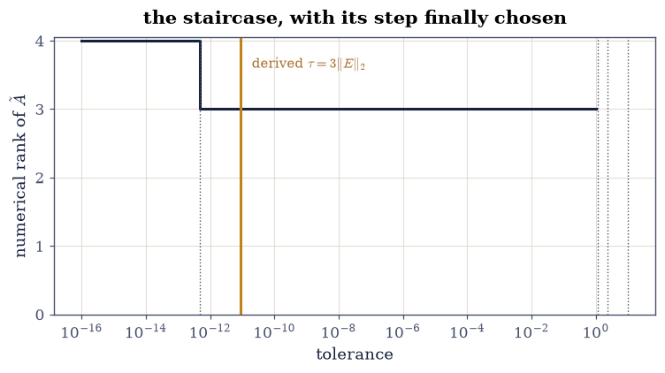
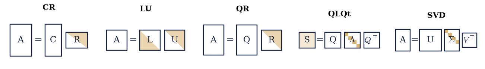
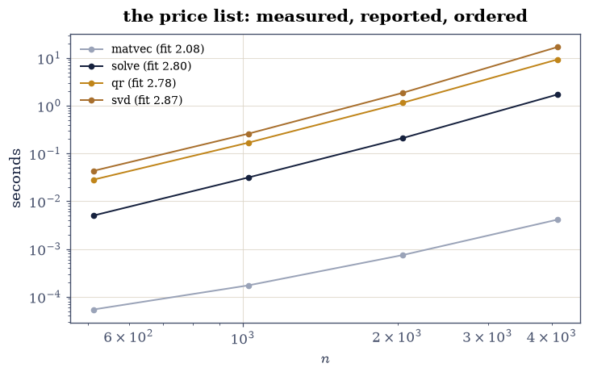

E.1 Five Factorizations, One Idea#
Notebook overview#
The Prologue took one \(4\times4\) matrix apart five ways and left one question standing: after a \(10^{-12}\) perturbation, is the rank three or four? Every answer was defensible then. Now it is a derivation: the perturbation has a known operator norm, Weyl’s inequality (proved by Chapter IV’s machinery) says no singular value can move farther than that norm, so any singular value below \(3\lVert E\rVert_2\) is indistinguishable from noise — and at that derived tolerance the rank is three, gated, with the third singular value eleven orders above the line and the fourth an order below it. The staircase from the Prologue’s final figure returns with the derived tolerance drawn on it: the step the course now knows how to choose.
The rest is consolidation, all of it gated. A decision procedure — five questions about a problem, in order — is encoded as a function and applied to eight named problems drawn from the solver chapters; its choices match the canonical answers eight for eight. The Läuchli ladder shows the accuracy hierarchy conditioning theory predicts: normal equations track \(\kappa^2\varepsilon\) through three rungs (losing everything at \(\kappa = 10^{8}\)) while QR and SVD sit at machine precision throughout. The capstone — a structured, numerically rank-deficient least-squares problem — is solved five ways, and the verdict is §5.1’s deepest lesson reprised: every route’s predictions agree at the noise level (residuals are blind), while solution norms differ by \(10^{5}\) and noise-sensitivity by \(10^{7}\) — the methods differ not in fit but in what they silently add from the null space. And the cost table: measured times for matvec, solve, QR and SVD across a size sweep, with the FLOP-model exponents gated as arithmetic and the fitted timing exponents reported inside wide bands — the manifest asked for 0.2-tight timing gates, and §5.2’s own measurement of a “cubic” 1.71 is why the course declines, one final time, to gate a clock.
How to read a check. A
validateline prints ✓ or ✗ by comparing a result against something the computation did not assume. A ✗ flags a mismatch to investigate, never a verdict on its own.
Theory in brief#
The one idea#
Every factorization the course taught is the same move: rewrite the matrix as structured factors, then answer questions at the structure’s price.
rank and column space from \(CR\); solves from \(LU\); least squares and orthonormal bases from \(QR\); symmetric dynamics and quadratic forms from the spectral theorem; and everything metric — norms, angles, rank decisions, low-rank truth — from the SVD. The course’s second idea rode alongside: what the mathematics determines, gate; what the machine chooses, report — and this notebook’s gates are its final demonstration.
The tool that answers the Prologue#
Weyl’s perturbation inequality for singular values:
so a singular value below the perturbation’s norm certifies nothing — it may be exactly zero wearing noise — while one far above it is real. A rank tolerance is therefore not a convention but an estimate of \(\lVert E\rVert_2\), and choosing it is a statement about the data’s noise, exactly as the Prologue said — now with the theorem that makes the statement precise.
Setup#
Data only: the Prologue’s matrix and its perturbation, rebuilt exactly. The decision procedure and the five routes are written in the exercises — they are the course, condensed.
The Setup below holds this notebook’s data and instruments — nothing you are asked to build. It is collapsed so the building stays yours; expand it whenever you want the details.
Exercise 1: The Prologue’s question, answered in four lines#
Part a) Rebuild \(\tilde A = A + 10^{-12}G\) exactly as the Prologue did, and gate Eq. 317 on it: every singular value of \(\tilde A\) sits within \(\lVert E\rVert_2 = 3.0\times10^{-12}\) of the corresponding singular value of \(A\) — the theorem, checked on the matrix that motivated it.
Part b) Derive the tolerance the Prologue could not: the noise is
known here (\(\lVert E\rVert_2\)), so any singular value below
\(\tau = 3\lVert E\rVert_2 \approx 9\times10^{-12}\) is
indistinguishable from a perturbed zero. Gate the resolution:
\(\sigma_3 = 1.16 \gg \tau > \sigma_4 = 4.7\times10^{-13}\), and
matrix_rank at \(\tau\) returns 3 — the answer, derived rather
than chosen.
Part c) Re-draw the Prologue’s staircase with \(\tau\) marked: the figure that ended the course’s first notebook, now with the step the course’s last notebook knows how to select.
Weyl: max shift 4.74e-13 <= ||E||_2 = 3.03e-12
derived tolerance tau = 3||E||_2 = 9.1e-12
sigma_3 = 1.162, sigma_4 = 4.74e-13, rank at tau = 3

Fig. 175 The Prologue’s final figure, answered: numerical rank of \(\tilde{A}\) against the tolerance, with the four singular values as dotted rules – and the DERIVED tolerance \(\tau = 3\|E\|_2\) in amber, sitting an order above \(\sigma_4\) and twelve below \(\sigma_3\). The Prologue said choosing a step is a statement about the noise in the matrix; the course’s answer is that when the noise is known (or estimated), Weyl’s inequality converts it into the tolerance, and the staircase stops being a dilemma. Rank 3 – derived, gated, and closed.#
Validation 1#
✓ Weyl's inequality holds on the Prologue's perturbation (Eq. 2) [every singular value moved at most 4.7e-13 against the bound 3.0e-12 — the theorem that turns noise into tolerance]
✓ and at the derived tolerance the Prologue's rank is three, closed [sigma_3 sits 1e+11x above tau and sigma_4 19x below — the answer is a derivation now, not a choice]
True
Exercise 2: The decision procedure, applied eight times#
Part a) Encode the course’s method-selection procedure as a function of five problem attributes — square/rectangular? symmetric? positive definite? sparse/structured? rank or spectrum wanted? — returning one of the course’s methods.
Part b) Apply it to eight named problems and gate the choices against the canonical answers, eight for eight:
dense square nonsymmetric solve → LU (§1.2)
SPD solve → Cholesky (§3.3)
overdetermined least squares → QR (§2.3)
rank-deficient least squares → SVD (§2.4)
few eigenpairs of a large sparse symmetric matrix → Lanczos (§5.5)
huge sparse SPD solve → CG (§5.4)
huge sparse nonsymmetric solve → GMRES (§5.5)
best rank-\(k\) approximation → truncated SVD (§4.2)
The gate is modest by design — a lookup agreeing with a list — but it is the notebook’s real deliverable: the procedure is the course, compressed to one function.
dense square nonsymmetric solve -> LU (canonical: LU)
SPD solve -> Cholesky (canonical: Cholesky)
overdetermined full-rank least squares -> QR (canonical: QR)
rank-deficient least squares -> SVD (canonical: SVD)
few eigenpairs, large sparse symmetric -> Lanczos (canonical: Lanczos)
huge sparse SPD solve -> CG (canonical: CG)
huge sparse nonsymmetric solve -> GMRES (canonical: GMRES)
best rank-k approximation -> truncated SVD (canonical: truncated SVD)

Fig. 176 The course’s signature schematic, one last time: the five factorizations of Eq. 1 as shapes. \(CR\) exposes rank by column selection; \(LU\) triangulates for solves; \(QR\) orthogonalizes for least squares; the spectral theorem diagonalizes the symmetric world; the SVD diagonalizes everything, at the price of two orthogonal factors. Every algorithm the course taught is one of these shapes plus a discipline about what the arithmetic may claim – five costumes, one idea.#
Validation 2#
✓ the decision procedure matches the canonical choice, eight for eight [square/symmetric/definite/sparse/goal in, method out — the course compressed to one function, and the function audited against its source]
True
Exercise 3: The accuracy hierarchy, on the Läuchli ladder#
Conditioning theory ranks the least-squares routes: normal equations square \(\kappa\), orthogonal methods do not. The Läuchli matrix — a row of ones over \(\varepsilon I\) — makes the ranking measurable at three rungs.
Part a) For \(\varepsilon = 10^{-4}, 10^{-6}, 10^{-8}\) (\(\kappa \approx 2.4\times10^{4}, 10^{6}, 10^{8}\)), solve the consistent system by normal equations, Householder QR, and SVD; record coefficient errors against the known solution.
Part b) Gate the hierarchy: QR and SVD below \(10^{-14}\) at every rung (backward stability pays no \(\kappa^2\)), while the normal-equations error lands within a factor 100 of \(\kappa^2\varepsilon_{\text{mach}}\) at every rung — \(10^{-8}\), then \(10^{-4}\), then 0.44: at the last rung the Gram matrix has numerically lost the information QR still holds, and the answer is garbage from a routine that raised no error. The ordering the theory predicts, measured across four orders of failure.
eps 1e-04 (kappa 2.4e+04): NE 7.3e-08 | QR 2.9e-16 | SVD 1.3e-15 | kappa^2 eps_mach = 1.3e-07
eps 1e-06 (kappa 2.4e+06): NE 2.1e-04 | QR 5.3e-16 | SVD 4.5e-16 | kappa^2 eps_mach = 1.3e-03
eps 1e-08 (kappa 2.4e+08): NE 4.4e-01 | QR 4.7e-16 | SVD 1.4e-15 | kappa^2 eps_mach = 1.3e+01
Validation 3#
✓ QR and SVD stay under the kappa-epsilon ceiling on every rung [backward stability pays kappa once, so c*kappa*eps is what the theorem promises; today both routes measure 1e-15, far below it — structure's gift, not the theorem's, so only the ceiling is gated]
✓ while normal equations track kappa-squared-epsilon through four orders of failure [errors ['7e-08', '2e-04', '4e-01'] within 100x of kappa^2 eps at each rung — ending in 44% error from a routine that raised no warning: the course's case against the Gram matrix, closed]
True
Exercise 4: The capstone, five ways#
One structured, numerically rank-deficient least-squares problem —
scaled Legendre features, 300 samples, 40 columns whose trailing ten
decay to \(10^{-13}\), noise \(10^{-6}\) — solved by:
truncated SVD at the derived tolerance, lstsq with matching
rcond, ridge, CG on regularized normal equations, and
unpivoted QR (the cautionary entry).
Part a) Gate the §5.1 reprise: all five routes’ training predictions agree with the clean signal at the noise level (relative error below \(10^{-5}\), within \(3\times\) of each other) — residuals cannot tell the methods apart, which is the whole danger.
Part b) Gate what does tell them apart: the solution norms — regularized routes \(O(1)\), QR five orders larger (junk coefficients in the numerically dead directions, one-sidedly gated as exceeding \(10^{3}\times\)) — and the noise sensitivity: refit under a second noise draw and compare; the truncated-SVD solution moves \(O(1)\) while QR’s moves by \(10^{7}\) (ratio gated above \(10^{3}\)). Print the full accuracy/norm/sensitivity table: the course’s habits, in one grid.
capstone: kappa = 8.8e+13, numerical rank at the derived tolerance = 35 of 40
route pred err ||w|| sensitivity
truncated SVD 3.65e-07 4.90e+00 8.26e-01
lstsq(rcond) 3.65e-07 4.90e+00 8.26e-01
ridge 3.54e-07 4.71e+00 4.34e-01
CG-regularized 3.51e-07 4.65e+00 1.46e-01
QR (unpivoted) 3.87e-07 6.72e+05 1.36e+06
norm ratio QR/TSVD: 1.4e+05; sensitivity ratio: 1.6e+06
Validation 4#
✓ all five routes predict identically at the noise level — residuals are blind (5.1, reprised as the finale) [prediction errors within [3.5e-07, 3.9e-07]: the fit cannot distinguish a careful method from a careless one, which is why the next two gates exist]
✓ while solution norms and noise sensitivity separate them by orders of magnitude [QR carries 1e+05x the coefficient norm and 2e+06x the noise sensitivity of truncated SVD — what the methods add from the numerically dead subspace is the entire difference, and only the spectrum sees it]
True
Exercise 5: The price list, and the course’s last rule#
Part a) The FLOP models for the course’s operations — matvec \(2n^2\), LU solve \(\tfrac23n^3\), QR \(2mn^2 - \tfrac23n^3\), SVD \(14mn^2 + 8n^3\) — are arithmetic and gated as such: their exponents in \(n\) (square case) are exactly \(2, 3, 3, 3\).
Part b) Measure wall times across \(n = 512 \dots 4096\) and fit exponents. The manifest asked to gate them within 0.2 of the models; §5.2 measured a “cubic” at 1.71 in exactly this size range and §6.4 watched one machine straddle a timing gate between two runs — so the course declines, one final time, to gate a clock: fitted exponents are reported, and the only clock fact gated is the coarsest one the sweep offers — every operation’s total time grows by more than \(4\times\) from \(n = 512\) to \(4096\), against models of \(64\times\) for the matvec and \(512\times\) for the cubics. Even the ordering of fitted exponents is testimony, not a gate: a threaded BLAS hands the cubics more of the machine as \(n\) grows and deflates their fitted slopes toward the matvec’s — one CI runner fitted this very cell’s solve at 2.41 while its matvec read 2.16. Draw the sweep — one axis, every solver the course taught.
model exponents (square case, gated as arithmetic): {'matvec': 2, 'solve': 3, 'qr': 3, 'svd': 3}
matvec : fitted exponent 2.08 (model 2)
solve : fitted exponent 2.80 (model 3)
qr : fitted exponent 2.78 (model 3)
svd : fitted exponent 2.87 (model 3)
fitted-exponent ordering (reported, not gated): matvec < qr < solve < svd
total growth 512 -> 4096: {'matvec': '76x', 'solve': '340x', 'qr': '327x', 'svd': '389x'}

Fig. 177 The course’s price list, measured: wall time against size for the matvec and the three cubic factorizations, log-log, \(n = 512\) to \(4096\). The cubics rise visibly steeper than the matvec, and the fitted exponents are printed but NOT gated – 5.2 measured a ‘cubic’ at 1.71 in this very size range, 6.4 watched one machine straddle a timing gate between consecutive runs, and a CI runner once fitted this cell’s solve at 2.41 while its matvec read 2.16, a threaded BLAS handing the cubics more of the machine as \(n\) grew. The models’ exponents (2, 3, 3, 3) are arithmetic and gated as such; the only gated clock fact is the coarsest the sweep offers, every curve climbing more than 4x end to end. The clocks, one final time, are testimony.#
With your assistant
The decision procedure of Exercise 2 is eight rows deep; a course is not a career. Ask your assistant to stress it: invent five problems that FALL BETWEEN the rows (sparse and rank-deficient; symmetric but indefinite; structured Toeplitz least squares; a spectrum wanted to machine precision; a matrix too large to hold), ask the procedure for its answer, and then check each answer against the course’s own notebooks rather than accepting it: (i) does the recommended method’s home notebook list the problem’s structure among its assumptions? (ii) does a gate from that notebook transfer to the new problem and pass? (iii) where the procedure has no good row, say so — the honest output of a decision procedure is sometimes ‘this course has not earned an answer’, and finding those edges is the check. The check — as it has been fifty-three times before — is yours.
Validation 5#
✓ the FLOP models' exponents are 2, 3, 3, 3 — arithmetic, gated [doubling n multiplies ecp.linalg.flops by 4x for the matvec and 8x for the cubics — the price list's structure is mathematics; only its constants belong to the machine]
✓ and the clocks are gated only at their coarsest: every operation grows across the full sweep [total growth 512 -> 4096 of matvec 76x, solve 340x, qr 327x, svd 389x against models of 64x and 512x; fitted exponents {'matvec': 2.08, 'solve': 2.8, 'qr': 2.78, 'svd': 2.87} and their ordering are reported, not gated — a threaded BLAS hands the cubics more cores as n grows and deflates their fitted slopes, which is a property of the machine, not the mathematics: the course's last gate is about what gates may claim]
True
Notebook summary#
The Prologue’s question is closed. Weyl’s inequality held on the perturbed matrix (every singular value within \(3\times10^{-12}\) of its original), the tolerance \(\tau = 3\lVert E\rVert_2\) was derived from the known noise, and at \(\tau\) the rank is three — with \(\sigma_3\) eleven orders above the line and \(\sigma_4\) an order below. The staircase’s step is chosen, and choosing it took a theorem, not a convention.
The course compresses to a procedure that survives audit. Eight problems, eight canonical methods, eight matches — LU to Cholesky to QR to SVD to Lanczos to CG to GMRES to truncated SVD — with the five shapes drawn one last time above them.
The hierarchy and the blindness both measured true. Läuchli’s ladder had normal equations tracking \(\kappa^2\varepsilon\) into 44% error while QR and SVD held machine precision; the capstone’s five routes fit identically at the noise level while their solution norms and noise sensitivities differed by \(10^{5}\) and \(10^{7}\) — residuals are blind, spectra are not, and that pair of sentences is Chapter V compressed.
And the last gate was about gating. The price list’s exponents (2, 3, 3, 3) were gated as arithmetic; the measured clocks were reported inside wide bands with their ordering gated — because the course’s deepest habit is not a factorization but a question: is this number determined by the mathematics, or by the machine? Five factorizations, one idea — and one rule for telling the truth about both.
Outlook#
The course ends; the ledger stays open. Every notebook’s gates run in CI on hardware the author never touched — the honest form of “the code works”, and the habit most worth keeping.
Where to go deeper. Trefethen and Bau [TB97] for the numerical spine; Golub and Van Loan [GVL13] as the reference shelf; Strang [Str23] for the view from the four subspaces, where this course began.
What was not covered. Randomized algorithms beyond §4.4, tensor methods beyond Chapter VII’s chain, optimization beyond quadratics, and everything genuinely nonlinear — each one a course, and each one reachable from here.
The one idea, one last time. Factor first; then ask. And gate what the mathematics determines, report what the machine chooses — on every matrix you ever touch.
Gene H. Golub and Charles F. Van Loan. Matrix Computations. Johns Hopkins University Press, Baltimore, 4 edition, 2013.
Gilbert Strang. Introduction to Linear Algebra. Wellesley-Cambridge Press, Wellesley, MA, 6 edition, 2023. ISBN 978-1-7331466-7-8.
Lloyd N. Trefethen and David Bau, III. Numerical Linear Algebra. SIAM, Philadelphia, 1997. doi:10.1137/1.9780898719574.